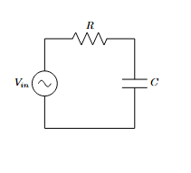
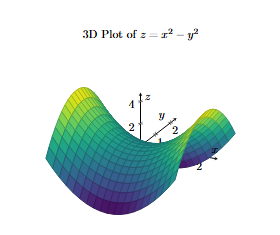
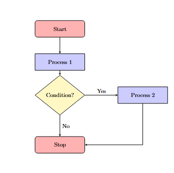
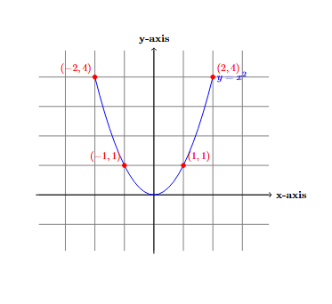
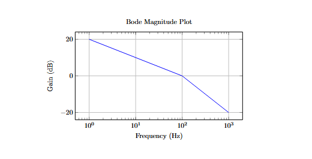
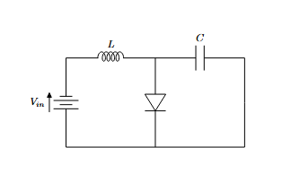
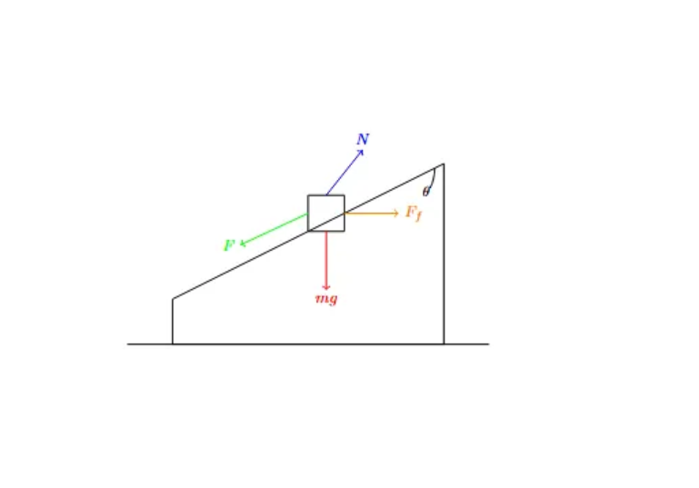
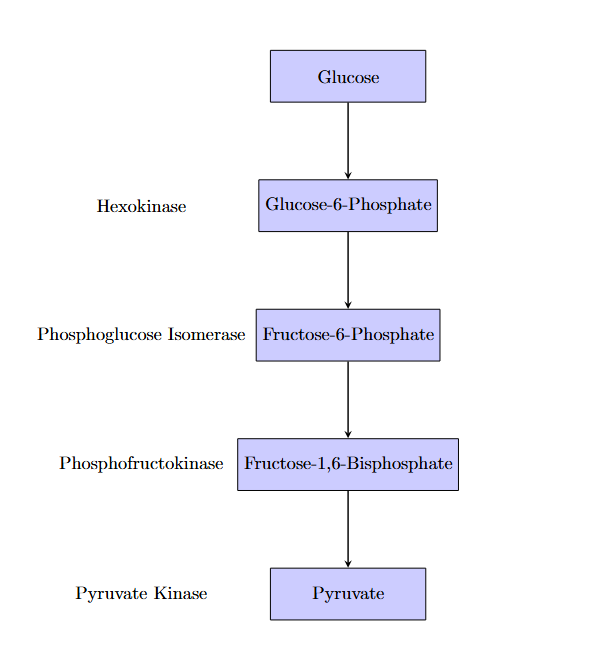

We are group J060 and we have been assigned TikZ-Plotting , A LaTeX package for creating vector graphics and plots for the Exposition Assignment.
Introduction
TikZ is an extremely versatile LaTeX package used for creating high-quality vector graphics, diagrams, graphs and plots. It provides a flexible and structured way to generate complex illustrations directly within LaTeX documents.Hence it is an essential tool for scientific and technical publications. We can also make flowcharts and circuit diagrams using the various libraries that TikZ has to offer. We have discussed the same in the further sections.
Key Features
- Integration with LaTeX: Since TikZ is native to LaTeX, it ensures seamless integration with mathematical expressions, text formatting, and referencing within documents. This eliminates compatibility issues that often arise when using external image formats (like PNG, SVG) inside LaTeX documents.
- Precision and Scalability: TikZ provides precise control over positioning, sizes, and alignment, making it ideal for technical diagrams and plots. Unlike external images, TikZ-generated figures scale perfectly without pixelation, maintaining high resolution in both PDFs and prints.
- Customization and Aesthetics: Allows full control over colors, line styles, node shapes, and annotations. The styling (e.g., colors, thickness, labels) can be modified using consistent LaTeX formatting.
Code Examples
RC Circuit LaTeX Code
\documentclass{article}
\usepackage{circuitikz}
\begin{document}
\begin{circuitikz}
\draw (0,0) to[sinusoidal voltage source, l=$V_{in}$] (0,3);
\draw (0,3) to[resistor, l=$R$] (3,3);
\draw (3,3) to[capacitor, l=$C$] (3,0);
\draw (3,0) -- (0,0);
\end{circuitikz}
\end{document}- We first define the document type, here it is an article.
- We then load our “circuitikz” library and enter into the TikZ environment.
- We define coordinates of various circuit elements as per our requirements.
- Once we have written our code, we exit the TikZ environment by “\end{circuitikz} \end{document}”.
Output :

3-D Plotting:
\documentclass{article}
\usepackage{pgfplots}
\pgfplotsset{compat=1.18}
\begin{document}
\begin{tikzpicture}
\begin{axis}[
title={3D Plot of $z = x^2 - y^2$},
axis lines=center,
xlabel={$x$}, ylabel={$y$}, zlabel={$z$},
xtick={-2,-1,0,1,2},
ytick={-2,-1,0,1,2},
ztick={-4,-2,0,2,4},
domain=-2:2,
y domain=-2:2,
colormap/viridis,
samples=20,
samples y=20,
enlargelimits=true
]
\addplot3[
surf,
] {x^2 - y^2};
\end{axis}
\end{tikzpicture}
\end{document}Output:

- We use the article class and load pgfplots.
\pgfplotsset{compat=1.18}ensures compatibility with PGFPlots version 1.18.- We enter the TikZ Environment and begin tikzpicture for drawing and axis for a 3D plot.
- We then define Axis & Labels, center axis lines, and label the x, y, and z axes.
- Now we define tick positions for x, y, and z and set the range (-2 to 2).
- We use viridis colormap and set samples = 20 for smooth rendering.
- We us
\addplot3[surf] {x^2 - y^2};to generate the 3D surface plot. - “enlargelimits=true” ensures that the plot does not get cropped at the edges.
Flowchart
\documentclass{article}
\usepackage{tikz}
\usetikzlibrary{shapes.geometric, arrows}
\tikzstyle{startstop} = [rectangle, rounded corners, minimum width=3cm, minimum height=1cm,text centered, draw=black, fill=red!30]
\tikzstyle{process} = [rectangle, minimum width=3cm, minimum height=1cm, text centered, draw=black, fill=blue!20]
\tikzstyle{decision} = [diamond, minimum width=3cm, minimum height=1cm, text centered, draw=black, fill=yellow!30]
\tikzstyle{arrow} = [thick,->,>=stealth]
\begin{document}
\begin{tikzpicture}
% Nodes
\node (start) [startstop] {Start};
\node (process1) [process, below of=start, yshift=-1cm] {Process 1};
\node (decision) [decision, below of=process1, yshift=-1cm] {Condition?};
\node (process2) [process, right of=decision, xshift=4cm] {Process 2};
\node (stop) [startstop, below of=decision, yshift=-2cm] {Stop};
% Arrows
\draw [arrow] (start) -- (process1);
\draw [arrow] (process1) -- (decision);
\draw [arrow] (decision.east) -- (process2.west) node[midway, above] {Yes};
\draw [arrow] (decision.south) -- (stop.north) node[midway, right] {No};
\draw [arrow] (process2) |- (stop);
\end{tikzpicture}
\end{document}- Here after loading the libraries, we define custom styles for our flowchart elements. We make red,blue and yellow colored rectangles for Start-Stop, Process and Condition statements respectively.
- We then begin our document and start drawing the flowchart. This opens a TikZ environment.
- We create the flowchart nodes:
- We place the “Start” node at the top using the startstop style.
- A process step called “Process 1” is placed below “Start”.
- A decision-making diamond labeled “Condition?” follows below Process 1.
- “Process 2” is placed to the right of the decision node.
- A “Stop” node is placed below the decision node.
\draw [arrow] (start) -- (process1)draws an arrow from “Start” to “Process 1”.- Similarly we connect Process 1 to decision node.
- If the condition is Yes, we move right to “Process 2”.
- If the condition is No, we move downward to “Stop”.
[thick,->,>=stealth]makes the line thicker and sets the arrowhead style to “stealth”, which is a sleek and modern design.
- From “Process 2”, we return to “Stop”.
- To end, we close the TikZ and document environment: This ends our flowchart and completes the document. A detailed explanation of the same is given in the video.
Output:

Cartesian Plot of Parabola
\documentclass{article}
\usepackage{tikz}
\begin{document}
\begin{tikzpicture}
% Draw grid
\draw[step=1cm, gray, very thin] (-3.9,-1.9) grid (3.9,4.9);
% Draw x and y axis
\draw[thick,->] (-4,0) -- (4,0) node[right] {\textbf{x-axis}};
\draw[thick,->] (0,-2) -- (0,5) node[above] {\textbf{y-axis}};
% Plot a parabola y = x^2
\draw[blue, thick, domain=-2:2] plot (\x, {\x*\x}) node[right] {\textbf{$y = x^2$}};
% Label points
\filldraw[red] (1,1) circle (2pt) node[anchor=south west] {$(1,1)$};
\filldraw[red] (2,4) circle (2pt) node[anchor=south west] {$(2,4)$};
\filldraw[red] (-1,1) circle (2pt) node[anchor=south east] {$(-1,1)$};
\filldraw[red] (-2,4) circle (2pt) node[anchor=south east] {$(-2,4)$};
\end{tikzpicture}
\end{document}- This LaTeX code uses the tikz package to draw a Cartesian plot.
- It creates a light gray grid for reference and plots the x-axis and y-axis as thick lines with arrows, labeling them accordingly.
- The function y=x² is drawn in blue over the interval [-2,2] with a label on the curve.
- Specific points on the parabola, including (1,1), (2,4), (-1,1), and (-2,4), are highlighted in red and labeled for clarity.
Output:

Use Cases (Through Screenshots):
TikZ is used in educational and research settings thanks to to its remarkable ability to generate high-quality vector graphics directly within LaTeX. Its use case in academia and industry include:
- Mathematics & Computer Science
- We can generate geometric diagrams, graphs, and set notations.
- Helps visualize algorithms and data structures like trees, graphs etc.
- Generating commutative diagrams in abstract algebra.
- Physics & Engineering
- helps in drawing circuit diagrams, free-body diagrams, and system models.
- Illustrate waveforms, electromagnetic field distributions etc.
- Biology & Chemistry
- Creating molecular structures, reaction mechanisms, and metabolic pathways.
- Illustrate genetic circuits and biological network models.
- Finance & Business Analytics
Used along with
pgfplotsto generate stock market trends, risk analysis graphs, and financial modeling charts.helps to visualize decision-making frameworks, workflows etc.
Following are some complex graphs,flowcharts and diagrams that are plotted using TikZ. These have applications in the practical, to be specific, scientific world in various research domains.


Fig: Left: Bodeplot, Right: DC-DC Converter Circuit Diagram


Fig: Left: Free Body Diagram, Right: Metabolic Pathway
Conclusion
TikZ is an indispensable and powerful tool for researchers, engineers, and educators requiring high-quality vector graphics in their LaTeX documents. The code-driven approach that it offers ensures consistency, automation, and easy modifications. It is of great use in academia helping us in making simple circuit diagrams and plots to complex circuits, 3-D plots, control system plots, Sankey Diagrams etc. It has a vast scope and provides immense flexibility when documenting technical files or research papers.
References
We have used Overleaf Website for codes and execution of the code (the images are generated using the codes itself): https://www.overleaf.com/project
Moroever to use Quarto to build websites, we referred to : https://quarto.org/docs/authoring/markdown-basics.html